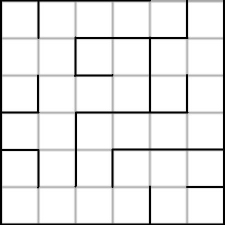
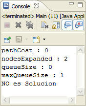

| Robot en un laberinto |
El juego consiste en conseguir que un robot atraviese el laberinto hasta una posición destino (o salida). Implementamos un laberinto de 6 x 6. 
La medida heurística se basa en la distancia que hay entre la posición actual del robot en el laberinto a la posición final o salida. h'(n) = Posición destino - Posición actual
Algoritmo BreadthFirstSearch o Primero en Anchura: Los nodos se expanden por orden no decreciente de profundidad. Este algoritmo no implementa la vuelta atrás, ya que todos los nodos de profundidad p se expandes antes que cualquier nodo de profundidad p+1. 
Estado ( Tablero_Laberinto[][] ) Estados
inalcanzables: Estado inicial: Estado final:  |